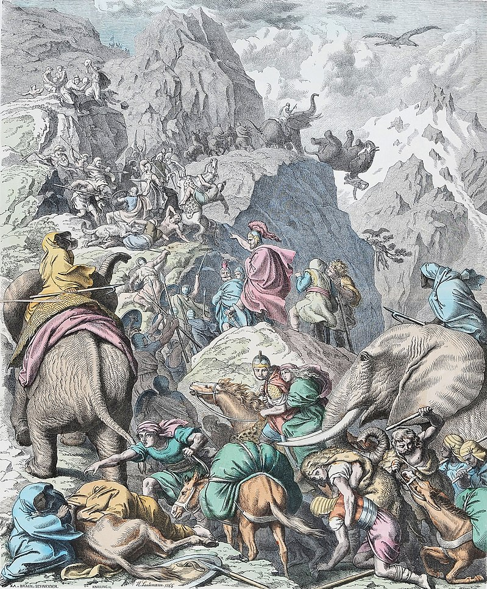
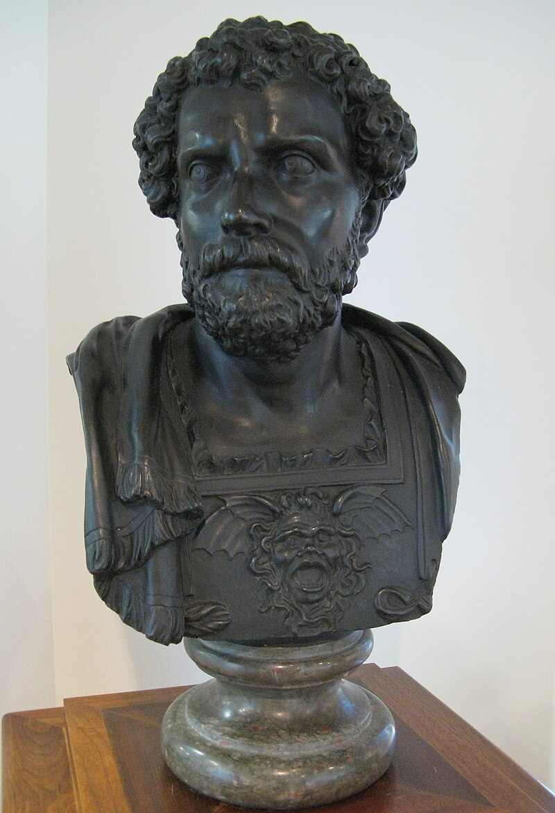

Introduction:
Hannibal (247 – between 183 and 181 BC) was a Carthaginian general and statesman who commanded the forces of Carthage in their battle against the Roman Republic during the Second Punic War.
Hannibal (247 – between 183 and 181 BC) was a Carthaginian general and statesman who commanded the forces of Carthage in their battle against the Roman Republic during the Second Punic War.
Hannibal's father, Hamilcar Barca, was a leading Carthaginian general during the First Punic War. His younger brothers were Mago and Hasdrubal; his brother-in-law was Hasdrubal the Fair, who commanded other Carthaginian armies. Hannibal lived during a period of great tension in the Mediterranean Basin, triggered by the emergence of the Roman Republic as a great power with its defeat of Carthage in the First Punic War. Revanchism prevailed in Carthage, symbolized by the pledge that Hannibal made to his father to "never be a friend of Rome".
Hannibal was one of the sons of Hamilcar Barca, a Carthaginian leader, and an unknown mother. He was born in what is present-day northern Tunisia, one of many Mediterranean regions colonised by the Canaanites from their homelands in Phoenicia, a region corresponding with the Mediterranean coasts of modern Lebanon and Syria. He had several sisters whose names are unknown, and two brothers, Hasdrubal and Mago. His brothers-in-law were Hasdrubal the Fair and the Numidian king Naravas. He was still a child when his sisters married, and his brothers-in-law were close associates during his father's struggles in the Mercenary War and the Punic conquest of the Iberian Peninsula.
After Carthage's defeat in the First Punic War, Hamilcar set out to improve his family's and Carthage's fortunes. With that in mind and supported by Gades, Hamilcar began the subjugation of the tribes of the Iberian Peninsula (Modern Spain and Portugal). Carthage at the time was in such a poor state that it lacked a navy able to transport his army; instead, Hamilcar had to march his forces across Numidia towards the Pillars of Hercules and then cross the Strait of Gibraltar.